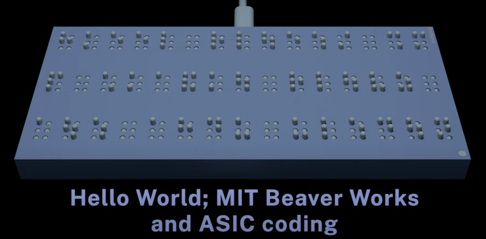
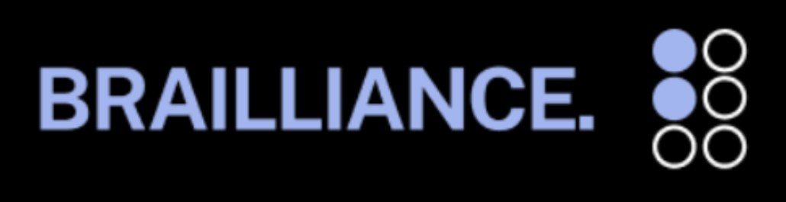

Designed and fabricated a custom ASIC using Verilog, OpenLane, Xschem, TinyTapeout, and the SkyWater Technology Foundry tapeout flow.
Developed "Brailliance," a low-cost portable braille reader utilizing custom ASIC logic for text-to-braille translation and actuator control, reducing projected device cost by approximately 90% while improving accessibility for visually impaired users.
Completed RTL design, simulation, synthesis, and verification while collaborating with mentors to address power, timing, and manufacturability constraints.
Selected to return for Summer 2026 as a Teaching Assistant, where I will support students in ASIC design workflows while continuing development and refinement of the Brailliance architecture and hardware system.